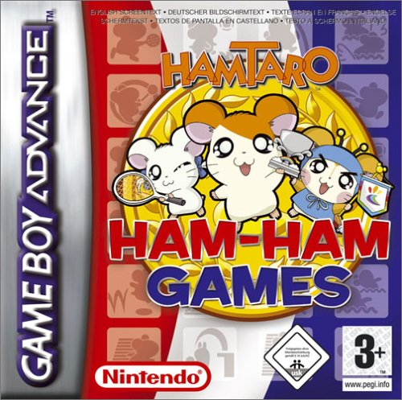
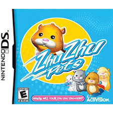
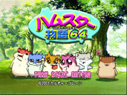
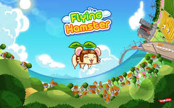
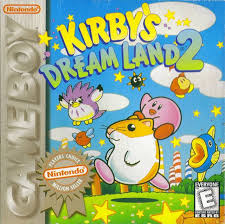

10-Apr-2017 | Milku
Forget books and TV shows, gaming is where it’s at.
Hamsters have scampered off the pages of books and away from TV screens and found their way on to computer monitors and various gaming devices too. I’ve mentioned previously that Hamtaro has starred in video games as you might expect from a Japanese creation.
Those ZhuZhu pets were good at spreading their paws into that entertainment genre too. Look out for the ZhuZhu Pets video game on Nintendo DS, iPhone, and PC. ZhuZhu Pets 2: Featuring The Wild Bunch can be played on Nintendo DS and Wii. You’ll have to have a Nintendo DS though if you want to play ZhuZhu Pets: Kung Zhu, ZhuZhu Princess: Carriages & Castles or ZhuZhu Puppies.
Hamster Monogatari 64 is a life simulation game for the Nintendo 64 where the player must raise and look after hamsters. It was only released in Japan, but I think there are lots of hamster owners who should try that game out before they head to Pets@Home to buy a real hamster.
Video games are where hamsters have found their niche. There are many other gaming hamsters out there.
Boo is Minsc's animal companion in the Baldur's Gate series of games.
Jogurt is a small hamster-like creature in Shining Force. I won't be buying this game as Jogurt is considered to be a "joke character" who remains perpetually weak even after joining the player's group.
Minsc in Tiny Brains is a blue hamster and one of the game's four playable characters. Used as a lab experiment by humans, he has the unique ability to create solid platforms in midair.
Newton in Flying Hamster is player character who flies using a propeller made from a leaf shoot to rescue his girlfriend Sookie from a giant eagle. I'm not sure about the girlfriend bit but I wouldn't mind having a go at flying.
Rick the Hamster from Kirby's Dream Land 2 is one of Kirby's animal companions. He is able to jump up walls and carry Kirby on his back.
It all sounds a bit too energetic for me. I'm heading back into my den for a nap!